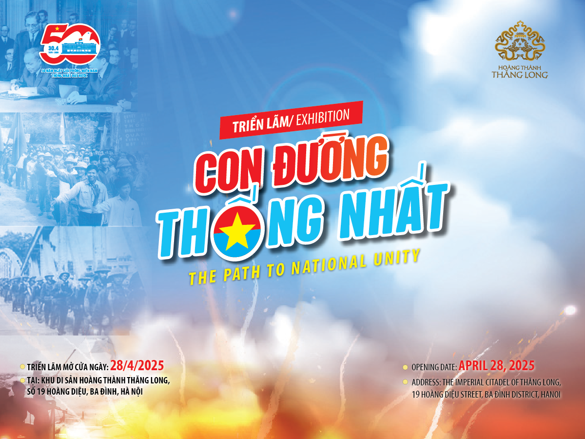

Hoạt Động Kỷ Niệm
Khám phá các sự kiện và chương trình đặc sắc.
Lịch Hoạt Động Kỷ Niệm Trọng Điểm
Theo dõi các chương trình đặc biệt trên VTV và các sự kiện khác.
CHƯƠNG TRÌNH NGHỆ THUẬT "ĐẤT NƯỚC TRỌN NIỀM VUI"
Truyền hình trực tiếp - 20h10 VTV1. Quy tụ hơn 1000 nghệ sĩ, chiến sĩ, với 22 tác phẩm ca múa nhạc, nội dung gần với các giai đoạn lịch sử của dân tộc Việt Nam, chương trình tôn vinh chiến công của cha ông, khơi dậy niềm tự hào dân tộc và khát vọng hoà bình.
VTV ĐẶC BIỆT "CUỘC ĐỌ SỨC CỦA Ý CHÍ"
Phát sóng 2 tập - 20h10 VTV1. Câu chuyện chân thực từ góc nhìn của ông Craig McNamara - con trai cựu Bộ trưởng Quốc phòng Mỹ Robert McNamara. Hành trình nội tâm đầy giằng xé của ông khi đối mặt với "di sản chiến tranh" do chính cha mình tạo ra và lời xin lỗi chưa từng nói gửi tới nhân dân Việt Nam.
CHƯƠNG TRÌNH NGHỆ THUẬT ĐẶC BIỆT "BÀI CA THỐNG NHẤT"
Phát sóng 21h00 VTV1. Chương trình mang đến các tác phẩm bất hủ như Tiến về Sài Gòn, Đất nước trọn niềm vui, Trường Sơn Đông - Trường Sơn Tây,... đồng thời kết nối cảm xúc nhiều thế hệ với khách mời nổi bật ở nhiều lĩnh vực để cùng khán giả nhìn lại một chặng đường mất mát, đau thương, nhưng vinh quang và kiêu hãnh của đất nước.
CHƯƠNG TRÌNH NGHỆ THUẬT "NỐI VÒNG TAY LỚN"
Truyền hình trực tiếp - 20h00 VTV Cần Thơ. Nêu bật thắng lợi vĩ đại của Chiến dịch Hồ Chí Minh lịch sử, mở ra thời kỳ độc lập, thống nhất và phát triển đất nước.
PHIM TÀI LIỆU "TIẾNG NÓI CỦA LƯƠNG TRI"
Phát sóng - 22h00 VTV1. Khắc hoạ cuộc đời của tù binh phản chiến Eugene Wilber, một phi công đồng thời là sĩ quan chỉ huy đã bị bắn rơi tại Việt Nam vào năm 1969. Bộ phim bám theo cuộc hành trình trong hiện tại của người con - Tom Wilber, để lật giở lại những dấu chân trong quá khứ của người cha và hiểu hơn về quyết định của ông khi đứng về phía Việt Nam trong cuộc kháng chiến chống Mỹ.
CẦU TRUYỀN HÌNH "VANG MÃI KHÚC KHẢI HOÀN"
Truyền hình trực tiếp - 20h10 VTV1. Chương trình là bản trường ca nghệ thuật được thực hiện tại các điểm cầu: Công viên Thống nhất (Hà Nội), Kỳ Đài Hiền Lương, Khu di tích Quốc gia đặc biệt đôi bờ Hiền Lương - Bến Hải (Quảng Trị) và Công viên Bờ sông Sài Gòn, Tp Thủ Đức (TP. Hồ Chí Minh).
PHIM TÀI LIỆU "GIỮA VÒNG VÂY QUÂN THÙ"
Phát sóng - 21h50 VTV1. Không chỉ là câu chuyện về chiến công của một nhà tình báo, mà còn là câu chuyện về một nhân cách lớn - nhà tình báo, Anh hùng lực lượng vũ trang nhân dân Phạm Ngọc Thảo.
CHƯƠNG TRÌNH NGHỆ THUẬT "ĐẢNG TRONG MÙA XUÂN ĐẠI THẮNG"
Phát sóng - 20h10 VTV1.
CHƯƠNG TRÌNH NGHỆ THUẬT ĐẶC BIỆT "MÙA XUÂN THỐNG NHẤT"
Truyền hình trực tiếp - 20h10 VTV1. Với sự tham gia của 1.000 người gồm các nghệ sĩ, nhóm nghệ sĩ, dàn nhạc, hợp xướng, diễn viên múa... mang đến những ca khúc đã đi vào lòng các thế hệ người yêu nhạc hơn nửa thế kỷ qua.
TRUYỀN HÌNH TRỰC TIẾP LỄ KỶ NIỆM, DIỄU BINH, DIỄU HÀNH CẤP QUỐC GIA
Từ 7h00 ngày 30/4 trên VTV1 và một số đài PT-TH địa phương. Từ 6h30 ngày 30/4 trên VTVgo. Lễ kỷ niệm, diễu binh, diễu hành cấp quốc gia nhân dịp 50 năm Ngày Giải phóng miền Nam, thống nhất đất nước là sự kiện đặc biệt được người dân cả nước và bạn bè quốc tế chờ đón.

CHƯƠNG TRÌNH NGHỆ THUẬT ĐẶC BIỆT "KHÁT VỌNG - TỎA SÁNG"
Kỷ niệm 135 năm ngày sinh Chủ tịch Hồ Chí Minh, tôn vinh di sản của Người. (Chi tiết sẽ được cập nhật)

HÀNH TRÌNH THEO DẤU CHÂN BÁC
Chuỗi hoạt động về nguồn, thăm các di tích lịch sử gắn liền với cuộc đời và sự nghiệp của Chủ tịch Hồ Chí Minh trên cả nước. (Chi tiết sẽ được cập nhật)
